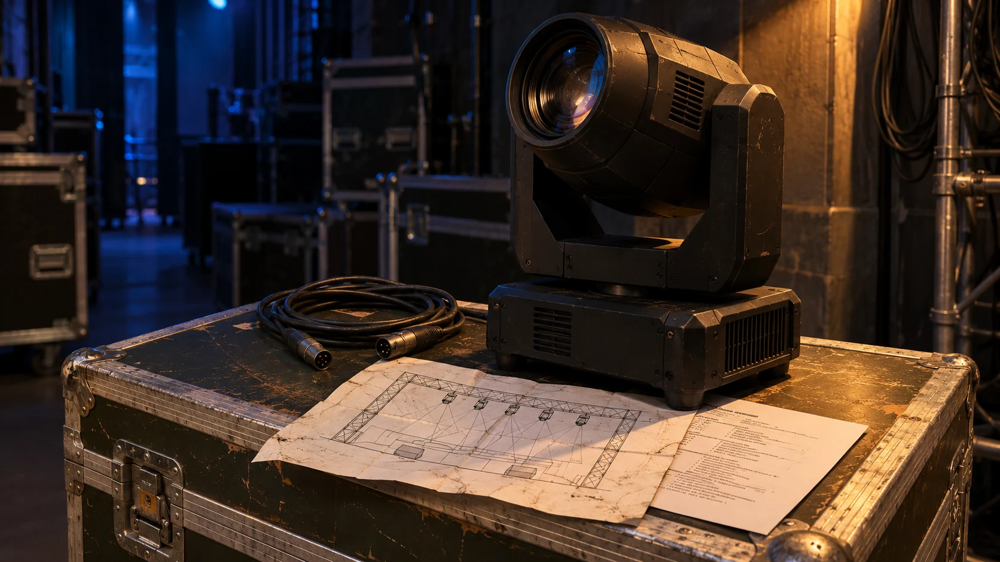

DOCUMENT INTAKE
Rider Intake
Extract equipment, stage and staffing requests with a reference to the original passage.
Explore Rider IntakeTour & venue production advance
Find the rider requirements a venue still needs to resolve.
The advance problem
The same signed rider can reach five rooms with five different inventories. When a missing fixture or a stage-width mismatch surfaces at load-in, the team may need a rental or a new schedule.

Product suite
Four separately scoped products follow the work from the first signed page to the venue-specific handoff. Venue Fit is the first paid evaluation.
DOCUMENT INTAKE
Extract equipment, stage and staffing requests with a reference to the original passage.
Explore Rider IntakeFIRST PAID MODULE
Compare the rider with venue plans and approved inventory. Put uncertain matches in the review queue.
Explore Venue FitCREW SEQUENCING
Arrange crew calls and equipment moves between sets around the changes the team has reviewed.
Explore Changeover PlannerREVIEWED HANDOFF
Assemble the agreed layout, crew sequence, approved substitutions and open items for one venue.
Explore Advance PacketInside the workbench
At Meridian Hall, a requested fixture is missing and the plan leaves the clear stage width uncertain. Inspect the sources, approve one substitution and see what stays open.
Review workflow
Check the rider passage against the dated inventory or plan. The reference travels with the proposed finding.
The document model suggests a comparison. The technical lead checks the actual fixture, space and local conditions.
Approve a supported substitution or assign follow-up. Every open item stays visible in the export.
Use cases
Each role has a different question to settle before the truck arrives.
A touring production manager compares a recurring request with the inventory at each stop.
Explore the workflowA house technical lead checks where a tour request departs from the approved local setup.
Explore the workflowA promoter needs to know whether a late rental is required and who can authorize the scope.
Explore the workflowA rental house can point a technical lead to a dated inventory entry and a comparison note.
Explore the workflowReviews & feedback
The pilot compares the suggested findings with final rentals and the decisions your technical leads actually made.
Sample reviewer note · fictional
“I can sign off the substitute. I still need someone in the room to check the clear width.”
Inez Park · Technical lead in the Meridian Hall walkthrough
Leave preview feedbackCommercial scope
First commitment
Agree on the buyer, approved records, named technical lead and comparison threshold. Each pilot has its own quote and signed scope.
Scope the evaluationAnnual price hypothesis
Proposed promoter or venue-group subscription with event tiers. Confirm volume, implementation effort and decision to renew during discovery.
See pricing assumptionsCommon questions
A budget owner, an approved rider, venue plans, dated inventories, representative final amendments and a named technical lead for each participating stop.
Venue Fit leads the funded comparison. Rider Intake, Changeover Planner and Advance Packet are separately scoped proposed offers.
The named technical lead decides fit and physical setup. The sample workbench records a local reviewer action and keeps incomplete evidence open.
Discovery establishes permitted file access, ownership and versioning. Specific integrations, import accuracy and implementation effort remain evaluation questions.
The paid evaluation
Bring the rider, the venue file and the person who owned the decision. Build a paid comparison around a case you already know.